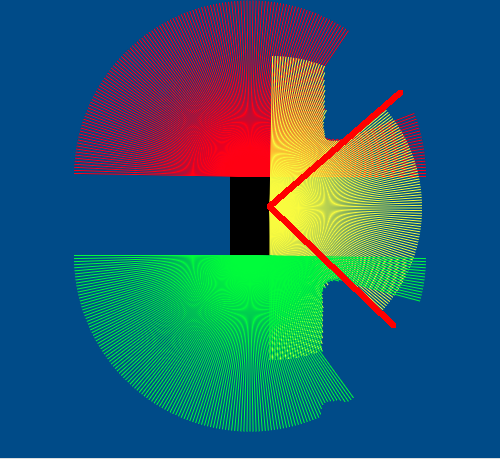
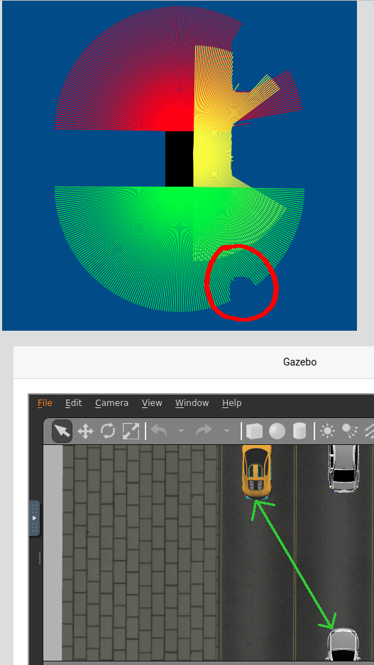
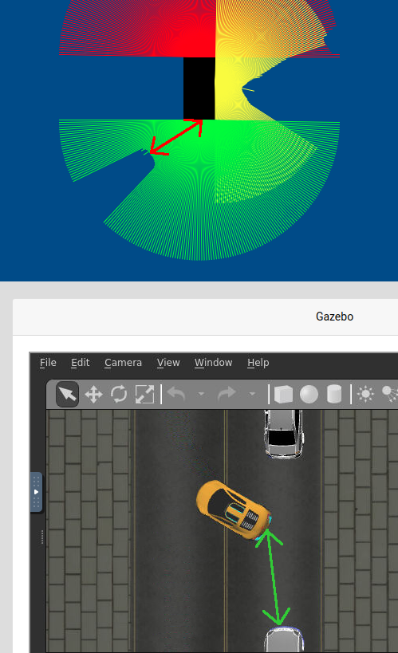
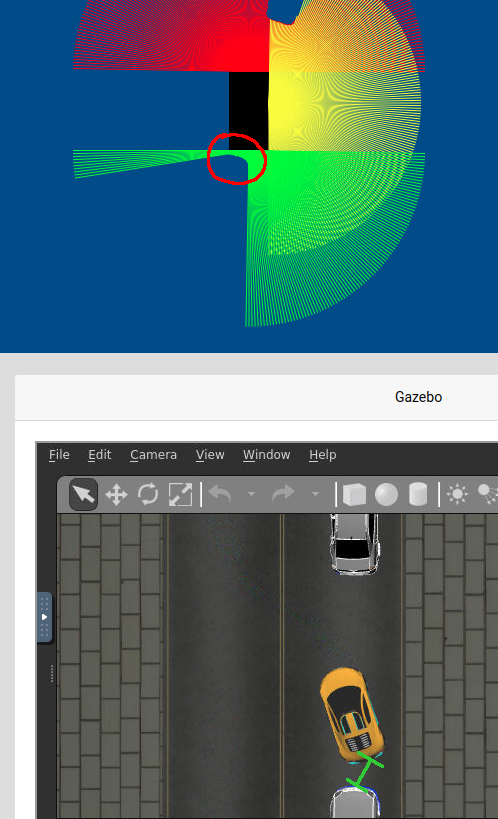
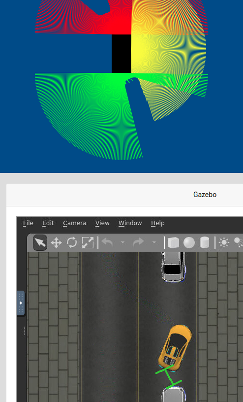
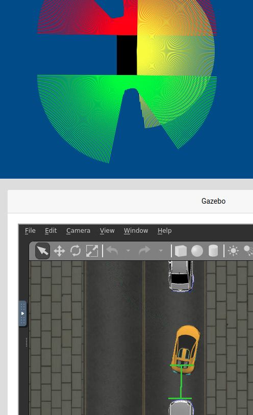

Desired behavior
The car should find a parallel parking spot, and park without hitting other cars.
Available sensors
For this practice, we have three lasers; one at the front, one at the right and one at the back.
Actuators
We can set linear velocity and angular velocity of the car.
Approach
I am going to use a finite state machine architecture, where each state is a python class that inherits from an "abstract" and general base class. This classes must implement the methods defined in the base class, since later another class "FSM" is going to take those classes and call the base methods.
The methods are:
This facilitates the execution of the FSM, since then a single command has to be executed:
States
SearchSpot
In this state the car advances while checking with the right laser if there is a spot where it can fit. To do that, it checks the values of the laser in a certain angle as can be seen in the next image. If a value in that range is less than a threshold, then there is an obstacle, so it cannot park.
The moment it finds a spot, it transitions to the next state.
GoForward
The car advances while checking the distance with the back car using the back laser. As long as that distance is below a certain threshold, it's still too close, so it keeps advancing.
Once it exceeds the threshold, it transitions to the next state.
GoBackwards
The car starts to go backwards with a positive angular velocity (turning the wheel to the right in a real car). Once the distance with the back car goes below a threshold, it changes to a negative angular velocity (wheel to the left).
Now it continues until it reaches another threshold:
When this occurs, it transitions to the next state.
Reposition
In this state the car advances while turning to the right (negative angular velocity).
The moment it reaches a threshold, it transitions to the next state.
LastPart
Finally, it advances while turning to the left (positive angular velocity).
The moment it reaches a threshold, it transitions to the Finished state, which sets the lineal and angular velocity to 0.